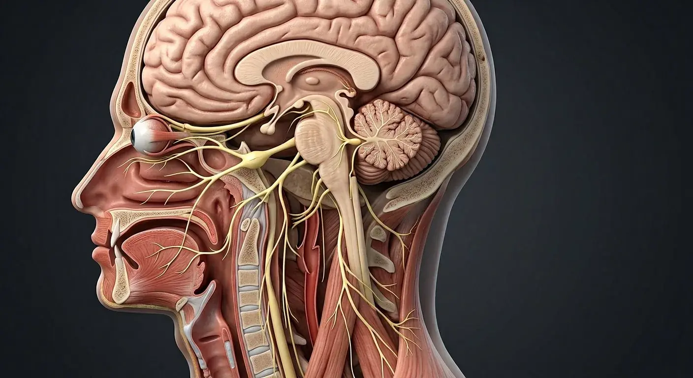

Key takeaways
- Twelve pairs of cranial nerves (Roman numerals I–XII) emerge directly from the brain and brainstem rather than the spinal cord.
- Cranial nerves I (Olfactory) and II (Optic) arise from the forebrain, whereas cranial nerves III through XII attach to the midbrain, pons and medulla oblongata.
- Three nerves are purely sensory (I, II, VIII), five are primarily somatic motor (III, IV, VI, XI, XII), and four are mixed sensory-motor nerves (V, VII, IX, X).
- Four cranial nerves carry parasympathetic visceral efferent fibres: Oculomotor (III), Facial (VII), Glossopharyngeal (IX) and Vagus (X).
How the 12 cranial nerves are numbered and classified
Rostral-to-caudal anatomical sequence along the skull base
Anatomists number the twelve cranial nerves in rostral-to-caudal order (anterior to posterior) according to the sequence in which they attach to the brain and pierce the dura mater of the cranial cavity. Unlike spinal nerves, which uniformly contain both dorsal sensory roots and ventral motor roots, individual cranial nerves specialize in specific embryological and functional modalities.
Understanding whether a nerve is purely sensory, purely motor, or mixed—and which cranial foramen it traverses—allows students to localize skull base lesions accurately during anatomical and clinical examinations.
- Special sensory nerves: Olfactory (CN I — smell), Optic (CN II — vision), and Vestibulocochlear (CN VIII — hearing and equilibrium).
- Extraocular motor nerves: Oculomotor (CN III), Trochlear (CN IV), and Abducens (CN VI) coordinate eye movements via the superior orbital fissure.
- Branchiomeric (pharyngeal arch) mixed nerves: Trigeminal (CN V — 1st arch), Facial (CN VII — 2nd arch), Glossopharyngeal (CN IX — 3rd arch), and Vagus (CN X — 4th and 6th arches).
Master reference table: Cranial nerves I–XII, foramina and functions
Use the table below to review each cranial nerve alongside its Latin nomenclature, functional modality, skull base exit foramen, and primary anatomical target.
| Nerve | Latin Name | Modality | Skull Foramen / Exit | Primary Anatomical Function |
|---|---|---|---|---|
| CN I · Olfactory | Nervus olfactorius | Sensory (SVA) | Cribriform plate of ethmoid | Olfaction (sense of smell) from nasal roof mucosa |
| CN II · Optic | Nervus opticus | Sensory (SSA) | Optic canal | Central and peripheral vision from retinal ganglion cells |
| CN III · Oculomotor | Nervus oculomotorius | Motor + Parasympathetic | Superior orbital fissure | Four extraocular muscles, eyelid elevation, pupillary constriction |
| CN IV · Trochlear | Nervus trochlearis | Motor (GSE) | Superior orbital fissure | Superior oblique muscle (intorsion and depression of adducted eye) |
| CN V · Trigeminal | Nervus trigeminus | Mixed (Sensory + Motor) | SOF (V1), Foramen rotundum (V2), Foramen ovale (V3) | Facial sensation and muscles of mastication (masseter, temporalis, pterygoids) |
| CN VI · Abducens | Nervus abducens | Motor (GSE) | Superior orbital fissure | Lateral rectus muscle (abduction of the eye) |
| CN VII · Facial | Nervus facialis | Mixed + Parasympathetic | Internal acoustic meatus → Stylomastoid foramen | Muscles of facial expression, anterior 2/3 tongue taste, lacrimal & salivary glands |
| CN VIII · Vestibulocochlear | Nervus vestibulocochlearis | Sensory (SSA) | Internal acoustic meatus | Cochlear hearing and vestibular balance/head acceleration |
| CN IX · Glossopharyngeal | Nervus glossopharyngeus | Mixed + Parasympathetic | Jugular foramen | Posterior 1/3 tongue taste/sensation, carotid body, parotid gland secretomotor |
| CN X · Vagus | Nervus vagus | Mixed + Parasympathetic | Jugular foramen | Pharynx/larynx phonation, thoracoabdominal parasympathetic innervation |
| CN XI · Accessory | Nervus accessorius | Motor (GSE) | Jugular foramen | Sternocleidomastoid and trapezius muscles |
| CN XII · Hypoglossal | Nervus hypoglossus | Motor (GSE) | Hypoglossal canal | Intrinsic and extrinsic muscles of the tongue (except palatoglossus) |
Deep focus: Trigeminal (CN V) vs Facial nerve (CN VII) in head and face anatomy
Why facial sensation and facial expression belong to two distinct cranial nerves
One of the most frequent anatomical questions in medical and dental courses is the division of labor across the human face. Cutaneous sensation of the forehead, cheek, cornea, nasal cavity, teeth, and jaw is carried almost entirely by the three divisions of the Trigeminal nerve (CN V: Ophthalmic V1, Maxillary V2, and Mandibular V3). Its motor root innervates only the muscles of mastication (chewing), tensor tympani, tensor veli palatini, mylohyoid, and anterior belly of digastric.
By contrast, the muscles of facial expression—including frontalis, orbicularis oculi, zygomaticus major, orbicularis oris, buccinator, and platysma—derive from the second pharyngeal arch and are innervated by the Facial nerve (CN VII). After passing through the facial canal of the temporal bone and exiting the stylomastoid foramen, CN VII passes through the parotid gland substance (without innervating it) to divide into temporal, zygomatic, buccal, marginal mandibular, and cervical branches.

Brainstem organization and the rule of 4s
In midsagittal and ventral views of the brainstem, cranial nerve attachments follow a predictable vertical arrangement that aids anatomical orientation:
Four cranial nerves lie above the pons (CN I and II in the forebrain; CN III and IV in the midbrain), four attach to the pons (CN V, VI, VII, and VIII, with VI–VIII clustered at the cerebellopontine angle), and four emerge from the medulla oblongata (CN IX, X, XI, and XII). The hypoglossal nerve (CN XII) exits pre-olivary between the medullary pyramid and olive, whereas CN IX, X, and XI exit post-olivary along the retro-olivary sulcus before passing through the jugular foramen.
Frequently asked questions
Which cranial nerves pass through the superior orbital fissure?
The oculomotor nerve (CN III), trochlear nerve (CN IV), ophthalmic division of the trigeminal nerve (CN V1), and abducens nerve (CN VI) all pass through the superior orbital fissure together with the superior ophthalmic vein.
Which four cranial nerves carry parasympathetic fibres?
Cranial nerves III (Oculomotor — Edinger-Westphal nucleus to ciliary ganglion), VII (Facial — superior salivatory nucleus to pterygopalatine and submandibular ganglia), IX (Glossopharyngeal — inferior salivatory nucleus to otic ganglion), and X (Vagus — dorsal motor nucleus and nucleus ambiguus to thoracic and abdominal viscera).
Why does only the trochlear nerve (CN IV) exit the dorsal aspect of the brainstem?
The trochlear nerve (CN IV) is unique among all cranial nerves because its axons decussate completely within the superior medullary velum and emerge from the dorsal (posterior) surface of the midbrain just below the inferior colliculi.
Which cranial foramen transmits cranial nerves IX, X, and XI?
The jugular foramen, located between the petrous temporal bone and occipital bone, transmits the glossopharyngeal (CN IX), vagus (CN X), and accessory (CN XI) nerves alongside the internal jugular vein.
What is the difference between trigeminal and facial nerve motor targets?
The trigeminal nerve (CN V3) supplies the muscles of mastication (masseter, temporalis, medial and lateral pterygoids), whereas the facial nerve (CN VII) supplies the superficial muscles of facial expression, stapedius, stylohyoid, and posterior belly of digastric.
Study Cranial nerves in the interactive atlas

Educational reference only: this article is written for anatomy study and is not medical, diagnostic or treatment advice. Contact the editorial desk.